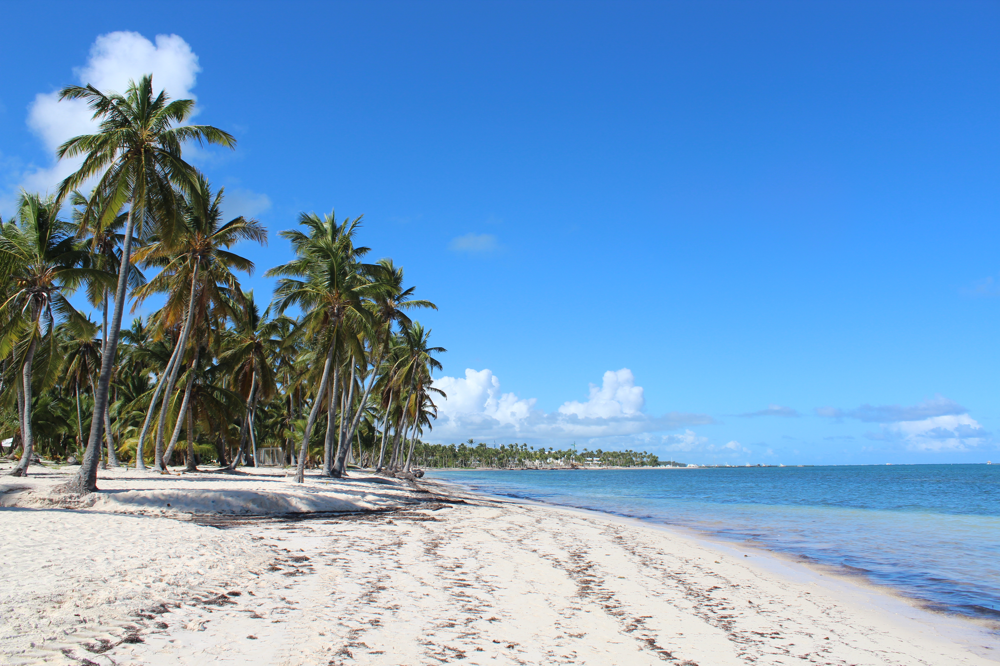
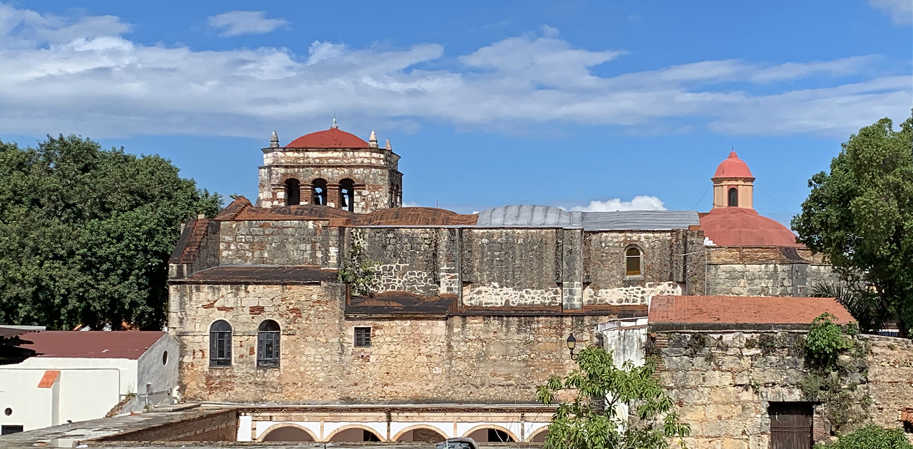
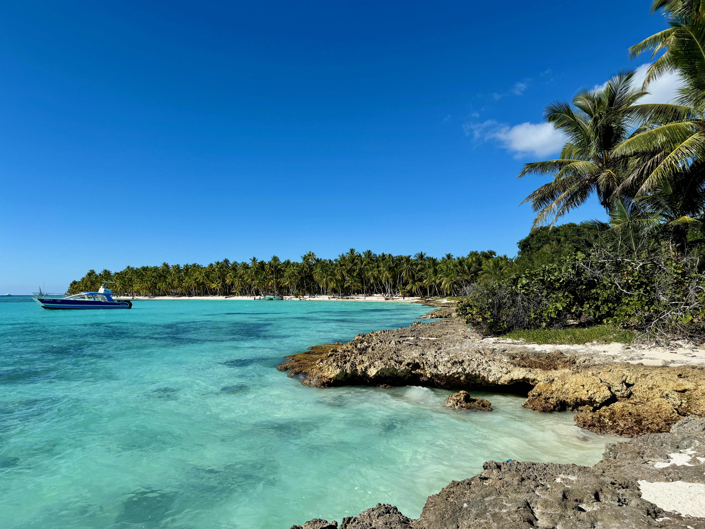
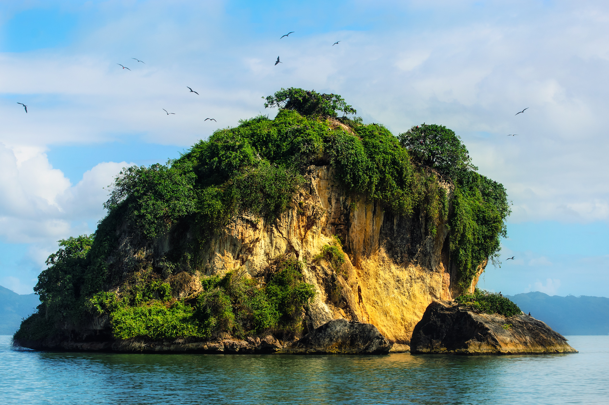
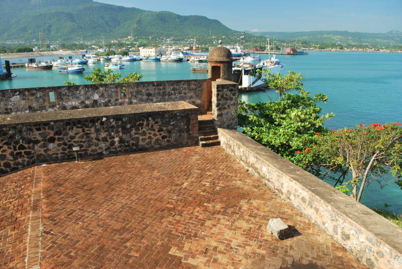
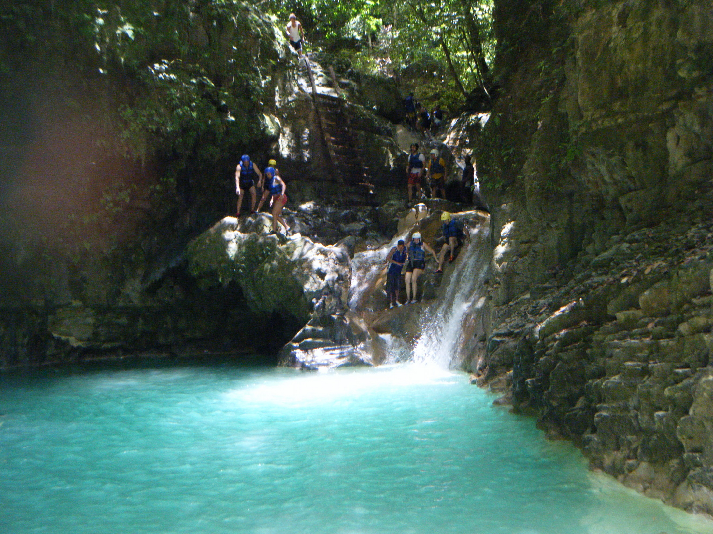

República Dominicana — Pontos Turísticos
Galeria de fotos de República Dominicana
Seis olhares sobre as praias, a cultura e as paisagens da República Dominicana.

Praia Cabeça de Touro — Punta Cana
Um paraíso de águas azul-turquesa e areias claras! Beleza tropical em meio ao encanto do Caribe.

Claustro & Igreja das Mercedes — Santo Domingo
Um marco da arquitetura colonial! História e tradição preservadas em antigas paredes de pedra no coração da República Dominicana.

Ilha Sanoa — província La Romana
Um refúgio de beleza natural! Águas cristalinas, areias brancas e palmeiras tropicais que revelam todo o encanto do Caribe.

Parque Nacional Los Haitises, Ilha dos Pássaros — Bahía de San Lorenzo
Natureza exuberante e vida selvagem! Manguezais, ilhotas rochosas e aves marinhas que transformam a baía em um refúgio natural de biodiversidade.

San Felipe de Puerto Plata
Um destino cheio de história e encanto! Arquitetura colorida, paisagens costeiras e vistas panorâmicas que revelam a riqueza cultural de Puerto Plata.

27 Charcos de Damajagua — perto de Imbert
Uma atração de aventura com cachoeiras, piscinas naturais e trilhas, procurada por visitantes que gostam de atividades ao ar livre.